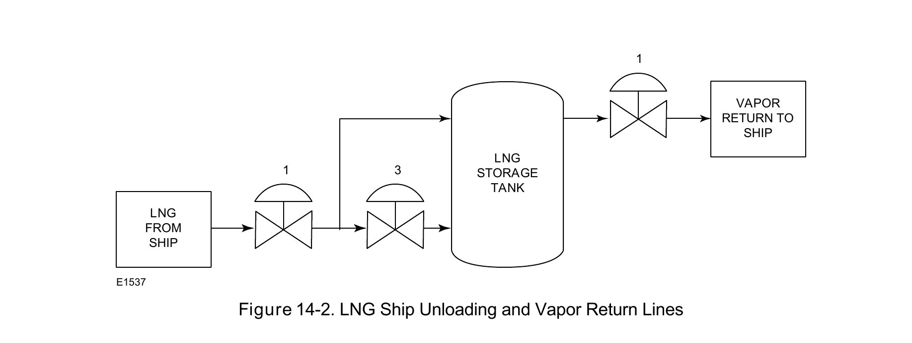

A Different Process, Same Material Constraint

Ship-unloading and vapor-return duty points exist specifically because unloading LNG from a ship displaces vapor that has to go somewhere — a real operational constraint unique to the receiving-terminal process, not present in liquefaction.
Fisher Control Valve Sourcebook — Oil & Gas (© 2013 Fisher), Chapter 14 "LNG Receiving Terminals," Figure 14-2 (drawing number E1537, printed p. 14-3) — "Figure 14-2. LNG Ship Unloading and Vapor Return Lines." — used directly. Component Index: ogas-cmp-lng-ship-unloading-vapor-return.